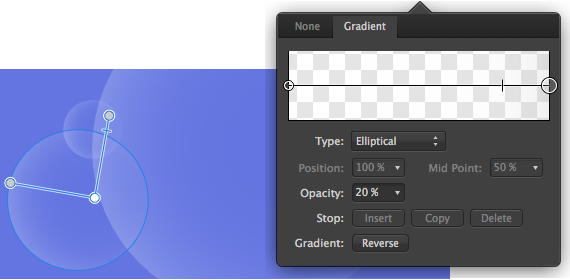

Как и при редактировании градиента, при редактировании прозрачности можно настраивать градиент, но только для альфа-канала композиции. Таким образом, можно создавать более сложные градиенты прозрачности, а затем применять их к заливке и обводке объектов.
Можно добавить более двух уровней альфа-канала в градиентном контуре, настроить положение каждого узла и (или) управлять цветовыми переходами. Это можно выполнить двумя способами:
В первом случае вы изменяете градиент прозрачности на глаз, а во втором — можете проектировать с высокой точностью и полностью контролируете процесс.

В диалоговом окне можно изменить приведенные далее параметры.